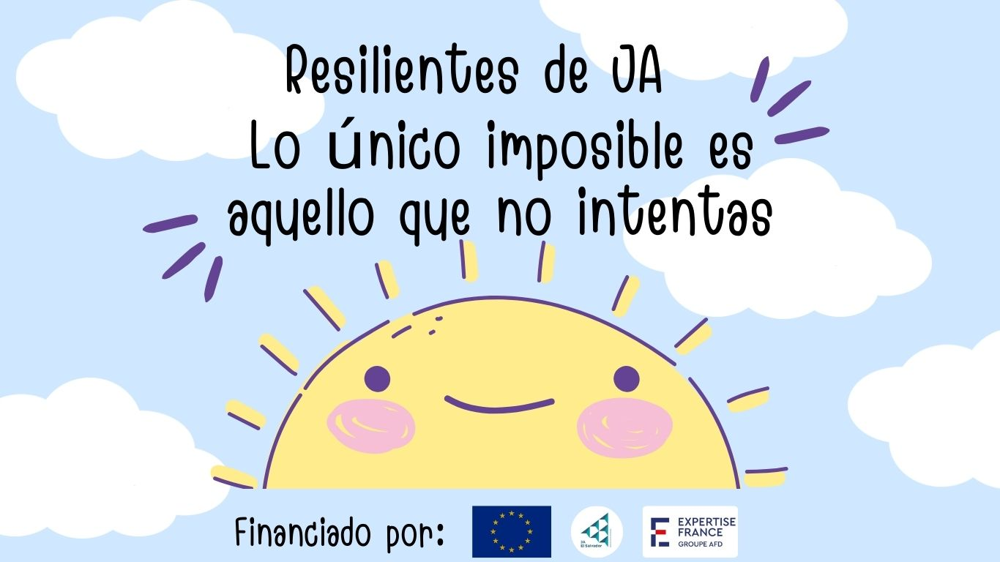
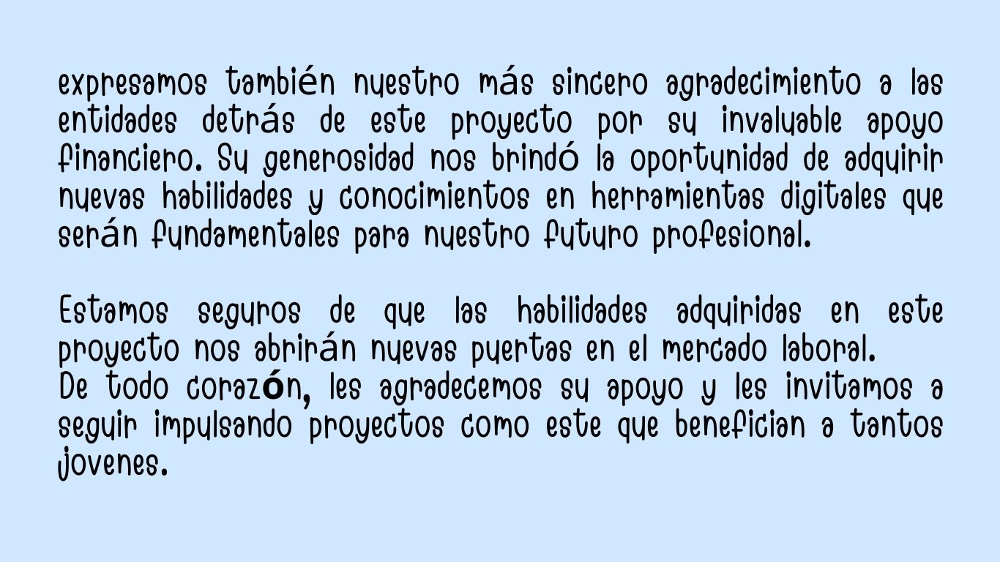

Microsoft Office es una suite de programas informáticos desarrollados por Microsoft que se utiliza
combinada en entornos de oficina
y educativos para crear, editar, compartir y gestionar documentos.


Junior Achievement (JA) es una de las ONG más grandes del mundo sirviendo a la juventud, activa a los jóvenes para los empleos del futuro.